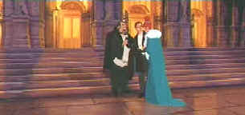

|
Anastasia(SE)A,B+ |
|
Fox/1997/97m/WS 2.35/PS 1.47 |
Absolutely sparkling family entertainment! Anastasia scores with grand, classic-style animation, sophisticated song-writing, a score reminiscent of classic Hollywood musicals, and a simple script that reminds viewers of the best fairy tale writing.
 |
| To the ballet! ©Fox |
For the uninitiated, Anastasia is the story of the
lost daughter of Czar Nicholas of Russia. When the Czar's family
is destroyed, in this animated cartoon by the evil powers of mad
monk Rasputin, Anastasia flees from harm with the aid of a young
palace servant. Unfortunately, she fails to board the train
taking her grandmother away to Paris and freedom. A bump on the
head takes her memory and makes ten years pass at the blink of
an eye. Anastasia is a beautiful woman called Anya,
brought up as an orphan. The only clue to her identity is a
medallion she wears around her neck with the inscription
"Together in Paris." This moves her to find her way to
that great city, and in trying, she hooks up with Dimitri and
Vladimir, who have some ideas of their own concoction about
making it to Paris and finding wealth. The setting include the wintry
Russia countryside, old world St. Petersburg and the magical
city of Paris.
Directors Bluth and Goldman
wisely chooses to focus on a few characters in this mature
children's adventure. Each character is given enough screen time
to be meaningful. Rasputin, alive and dead, has some terrific
animation pratfalls, losing parts of his body as he foams at the
mouth. Anastasia never seems overly cute. Perhaps this
works against the kiddie audience but it certainly makes for
better adult entertainment. All the elements are well integrated
and the pacing outstanding.
The animation marries traditional cell
work with computer power. The result is a sweeping, natural
style, with a delightful color palette. Movements of the
characters is natural and subtle touches make them almost seem
live. The cityscapes are wonderfully drawn and the characters
each take on personalities that work well with the actors'
voices. Anastasia is voiced by Meg Ryan with innocent charm
laced with imperious spunk. John Cusack is effective as the
imaginative Dimitri and Kelsey Grammer is delightful as
Vladimir. Christopher Lloyd works up a positive lather as
Rasputin. Hank Azaria is very entertaining as Bartok the
albino bat, Bernadette Peters adds characteristic energy as
Sophie and Angela Lansbury is appropriately regal as Grand
Duchess Marie.
Fox gives DVD viewers a choice for Anastasia
in widescreen 2.35 or PS 1.48. There are some typical NTSC
artifacts associated with quick movement, which is more
pronounced in the widescreen version which utilizes less of the
system's existing line structure. Colors are consistently rich
and varied in tone. The picture is very sharp. The Dolby Digital
5:1 surround is provided with outstanding directionality.
Effects have dynamic impact and the songs and music are rendered
with delightful energy and balance. Included in the limited
special edition are two overlapping making of productions. Both
give some fine insight into the animation and the thought
process of the creative team. There are also two sing-a-longs,
and trailers for Anastasia and Bartok the Magnificent.
The Feature Archive has articles ranging from Akira Kurosawa to Blonde Bimbos, The Heistmasters and Frank Darabont.
Watching Movies or Watching Video

Don't lose site of why you fell in love with the movies.
Click on the image to read more.
Check out the Movie Poster Archive for short bios and images of Susan Hayward, Kirk Douglas, Katharine Hepburn and many more. This month's featured star is Clark Gable.

Imaging Science
Foundation promotes
proper standards in home theater viewing. ISF trained
technicians offer monitor calibration services to consumers. The
difference in a properly calibrated monitor can be
astounding. Click on the image to find an ISF member near you.
HOT
LINKS
National
Preservation Film Board
Learn about what this organization is
doing to preserve our film heritage. Want to know the guidelines
for proper handling of film? This is the place.
Home
Theater Reference Reviewing System

When you read a DVD review it's of utmost importance to know
what equipment is being used to evaluate quality. Click on the
projector to find out more.